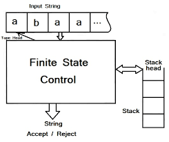
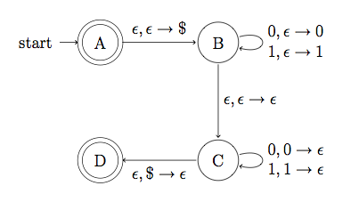

Theory of Computation
Home
Pushdown Automata
Pushdown Automata is a finite automata with extra memory called stack which helps Pushdown automata to recognize Context Free Languages. A Pushdown Automata (PDA) can be defined as : Q is the set of states. ∑ is the set of input symbols. Γ is the set of pushdown symbols
A Pushdown Automata (PDA) can be defined as :
- Q is the set of states
- ∑ is the set of input symbols
- Γ is the set of pushdown symbols (which can be pushed and popped from stack)
- q0 is the initial state
- Z is the initial pushdown symbol (which is initially present in stack)
- F is the set of final states
 
PDA Structure PDA Diagram